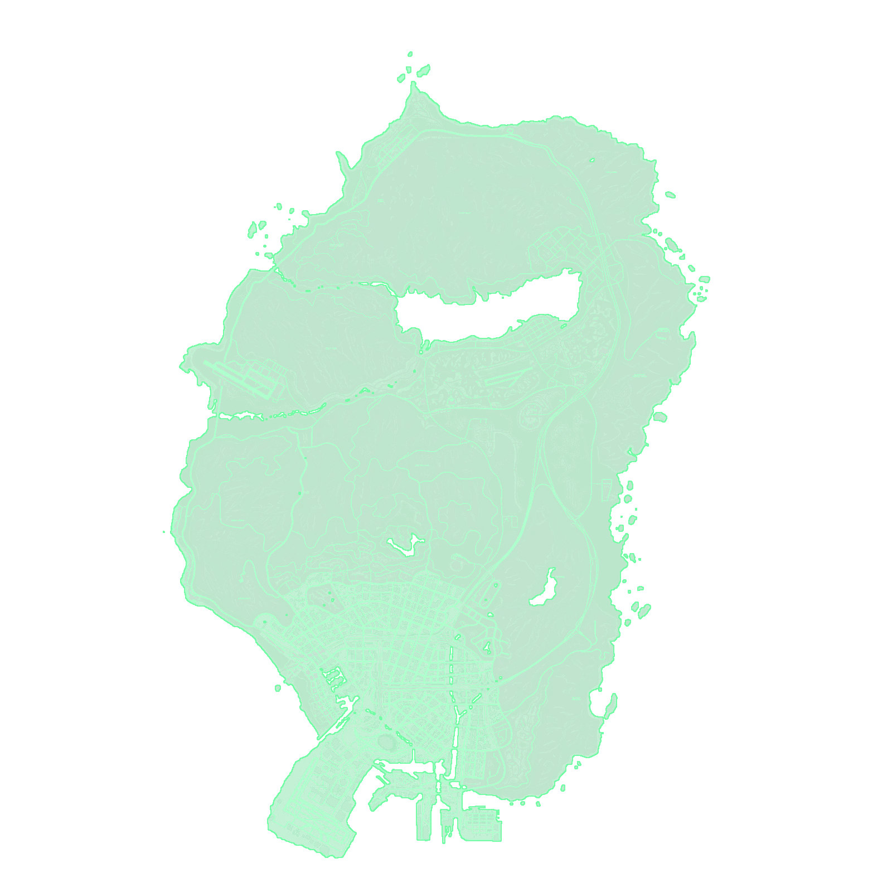

PREVIEW INTERATIVO
✈ Avião
🚁 Helicóptero
🛫 Em Voo
🕹 Comando Voo
⚡ Partida Rápida
↺ Cold & Dark
|
📟 Tablet Controlador (Mapa Completo)
|
🌧
❄
🌫
✥ ARRASTE • CLIQUE+SCROLL = TAMANHO
❄
NEVE
🌧
CHUVA
🌫
NEBLINA
N
RADAR OFF
LIGUE NO COCKPIT
COCKPIT
F6
✥ ARRASTE • CLIQUE+SCROLL = TAMANHO
P
AP
MODO
OFF
000
KTS
ALT
─
00000
FT
RPM
0000
0.0V
BAT 100%
FUEL
100%
SISTEMA DE CONTROLE DE TRÁFEGO AÉREO — SAN ANDREAS
TORRE DE CONTROLE — FORT ZANCUDO
❄ NEVE
🌧 CHUVA
🌫 NEBLINA
🔊 SONAR: ON
✕ FECHAR [ESC]

N
E
S
W
ARRASTE P/ PERCORRER O MAPA • SCROLL P/ ZOOM
ZOOM:
−
1.0x (MAPA INTEIRO)
+
🗺 MAPA INTEIRO
🗼 TORRE
MAPA: